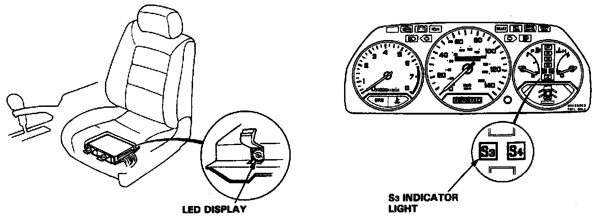
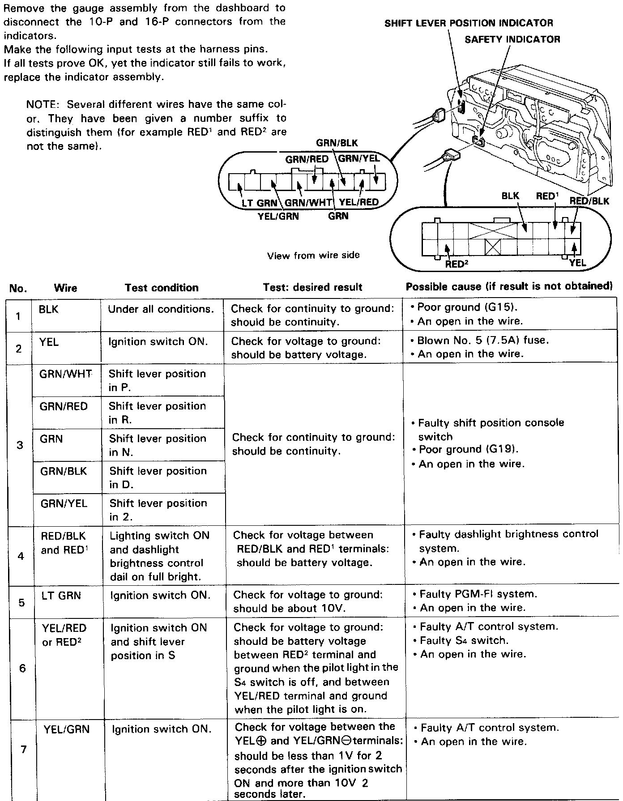

Transmission Shift Position Indicator Lamp: Testing and Inspection

The A/T Control Unit has a built-in self-diagnosis function. The S3 indicator light in the gauge assembly and LED display on the A/T control unit blink when the A/T control unit senses an abnormality in the input or output systems. The number of blinks from the LED display varies according to the problem, which can be diagnosed by counting the number of blinks.
When the ignition switch is turned ON, the S3 indicator light comes on for about two seconds regardless of whether there is a problem. The S3 indicator light will also come on when in S3 mode.
If there is a system problem, the S3 indicator light will come on and continue to blink until the ignition key is turned OFF. When the ignition key is turned ON again, the S3 indicator light will not blink again for the original problem. But if the A/T control unit senses the original abnormality again with ignition switch ON, the S3 indicator light will blink again for the original problem. Therefore, even though the S3 indicator light does not come on when turning the ignition key ON, check the LED display for automatic transmission problem diagnosis.
Since the LED problem code is retained in memory, it will blink again whenever the ignition key is turned on. If the LED
problem code is not memorized, check the following causes:
^ Check the Alternator Sense fuse (7. 5A) in the under-hood relay box.
^ Check for an open circuit in the YEL/BLU wire between the Alternator Sense fuse (7.5A) and A/T control unit B12 terminal.
After making repair, disconnect the Alternator Sense fuse (7.5A) in the under-hood relay box for more than ten seconds to reset LED display memory.

Indicator Input Test